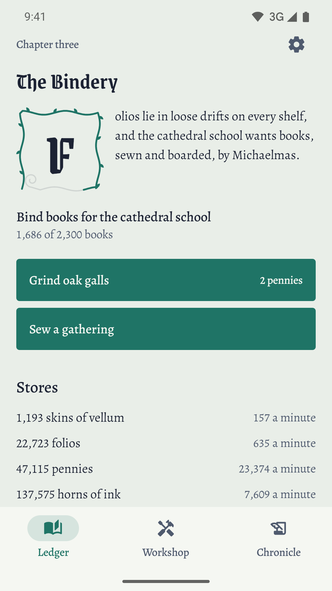
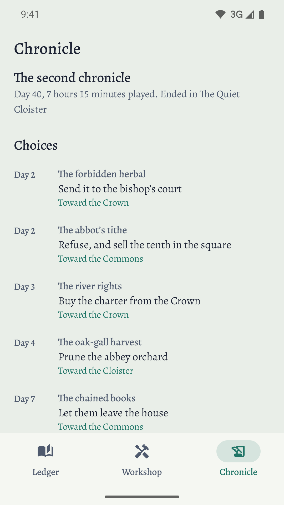
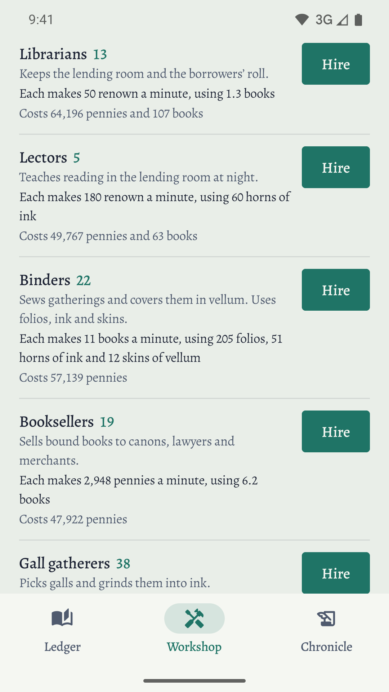
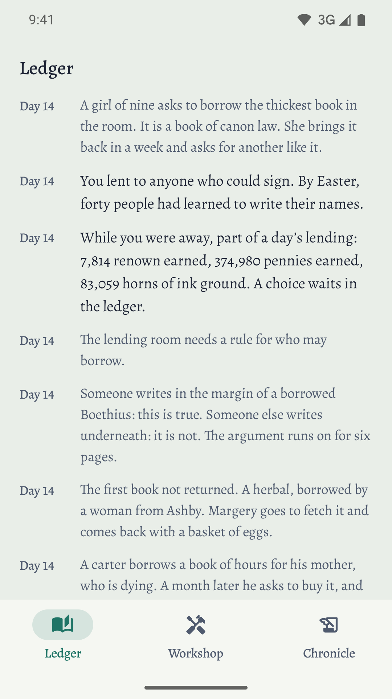
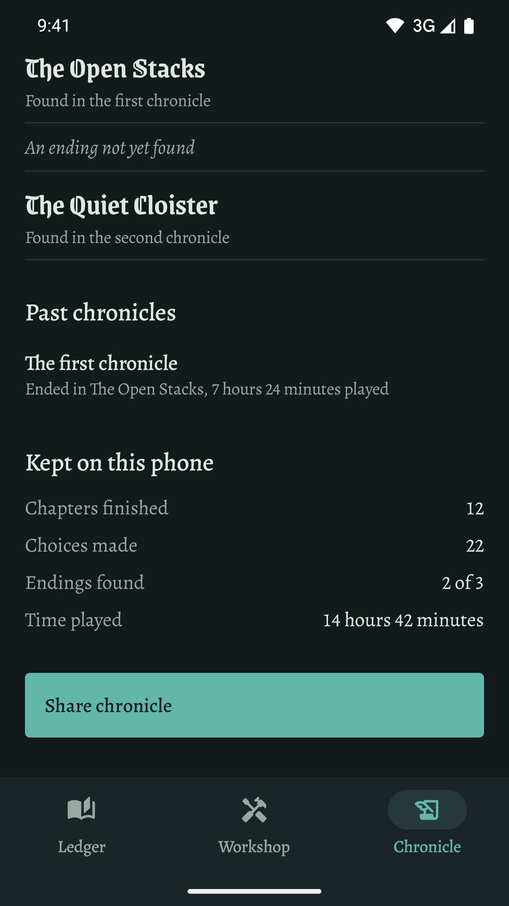
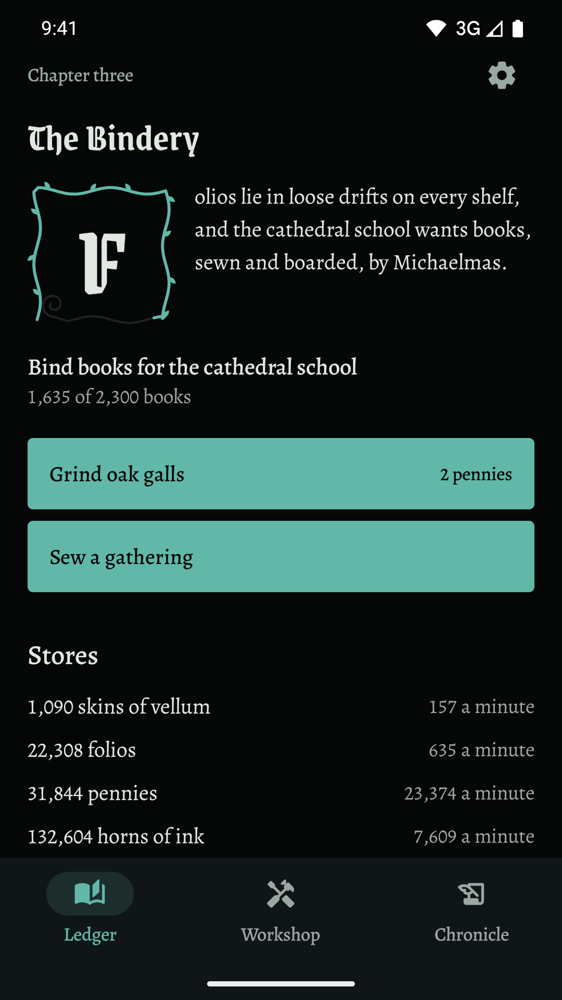

Grow a medieval book trade from one quill to a printing city, in a story that ends.
Get it on Google Play
One candle, one quill, three skins of vellum, and a letter from the abbot: he wants a psalter by Lent.
That is the whole game at first: one line of ink and one button. Copy a few lines and a carter at the abbey gate offers three pennies a page. Then a novice, then vellum, then a workshop. New work arrives through the story instead of a tutorial, and the chapter's first letter grows a verdigris vine as you near its goal.
Each is a short passage with three answers. Every answer changes what your workshop produces and leans the town toward the Commons, the Crown or the Cloister. There is no reloading.
Six chapters, tuned for about six to ten hours. Your scribes keep working while the game is closed, and a long break never skips a chapter or makes a choice for you. Finish, and a second chronicle starts faster, with notes on what you chose last time.





The price buys the whole game. There is nothing to unlock, no energy, no daily reward and no premium currency.
No internet permission. The story, the fonts and every number ship inside the app.
Nothing is collected. Your save stays on your phone. Read the privacy policy.
Send your save file through the share sheet and load it on another phone.
Book typography in light, dark and true black themes.